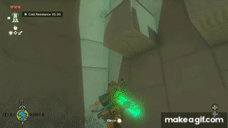

Открытый мир Skyrim vs Хороший открытый мир
На пятый раз, как я во сне применяю способность Ascend, следует признаться, что Legend of Zelda: Tears of the Kingdom пропитал мне мозг.

TOTK лучше реализует троп открытого мира/песочницы, чем ее предшественник, Breath of the Wild. Это идеальные лабораторные условия, буквально одна и та же игра, в которых различается только одна переменная — а значит, ее можно измерить! И на основе этого понять, чем именно реализация тропа “песочница/открытый мир” в Morrowind настолько лучше, чем в Skyrim, почему для меня это было два настолько качественно отличающихся опыта.
Ключ в TOTK/BOTW, то различие, которое сделало первое настолько лучше — прогрессия. В любой RPG герой становится сильнее со временем, это столп жанра. В чем именно заключается “сильнее” в наших играх? Давайте разбираться.
От бесправного узника до убийцы Алдуина
В начале у меня был только ржавый кинжал и простенькое заклинание огня. Я отбивался от бандитов и волков, собирал грибы с ягодами и продавал снятую с трупов броню. Своего первого дракона я сумел убить только в окружении союзных лучников, самому пытаясь выцепить ящерицу в небе, промахиваясь девятью стрелами из десяти и глотая зелья каждый раз, как она приземлялась и припечатывала меня лапой. Я спал в тавернах и воровал мелочь из карманов.
Но чем больше я практиковал свои навыки, тем сильнее я становился. Моя клеймора, зачарованная огнем, резала сквозь драугров, как сквозь масло. Мои заклинания замораживали врагов насмерть и призывали даэдра из Обливиона. Зелья текли сквозь мои вены, залечивая раны, делая меня крепче, сильнее. Порой до боя даже не доходило — несколько стрел из тени решали проблему до того, как она началась. Мои драконьи крики могли делать меня неуязвимым, останавливать время и подчинять разум. Мне уже не надо было побираться ради золота в каждой урне; на фоне драгоценностей, которые я выносил из каждого подземелья, золотым больше, золотым меньше? Как высокоранговый член гильдий, я имел доступ к лучшим профессионалам для тренировки или помощи в бою.
Сейчас, когда я наношу сокрушительный удар пожирателю миров, я неуязвим, способен уничтожать врага за врагом одним щелчком. Даже великие драконы не могут меня и поцарапать. Как лидер всех гильдий и Тан всех холдов, я вхож куда угодно. Никто не может мне противостоять.
От мальчугана до легендарного героя
На небесном острове, где я проснулся, было много работы. Я собирал оружие из палок и камней, чтобы побеждать конструктов. Я кидал яблоки в огонь, чтобы потом лечиться печеными. Обойти весь остров было сложно — отвесные стены, слишком высокие, чтобы по ним карабкаться; реки, которые удалось переплыть далеко не с первого раза. В одной части острова царил мороз, и мне приходилось разводить по пути костры, чтобы не замерзнуть. На острове был один огромный конструкт, которого мне так и не удалось победить — его единственное уязвимое место было слишком маленьким и двигалось слишком быстро, чтобы его победить.
Уже внизу, на земле, я освоился лучше. Найденные в святилищах световые сферы делали меня сильнее, крепче. Устройства Зонаев помогали преодолевать сложные препятствия, переплывать реки, взбираться на вершины — хотя ограниченный заряд батареи делал их временным и редким подспорьем. Я нашел способ легко доставать до уязвимого места конструктов, но вокруг были и другие гигантские звери или колоссальные драконы, к которым я не знал, как подступиться. Был один каменный великан, которого я все-таки смог победить, хотя на это ушло больше времени, риска и эликсиров, чем, наверное, того стоило. Я изучил комбинации материалов, которые хорошо служат как оружие, и я набрал ингредиентов на еду и эликсиры, с которыми уже мог вступать в схватки, ранее для меня неподъемные. Небесные башни, которых я нашел уже дюжину, помогали быстро перемещаться по миру, возвращаться на небесные острова. Я знал, что носить и какую еду готовить в какие регионы, так что жара и холод были неудобством, но не препятствием. В подземных пещерах я тоже чувствовал себя отлично — достойный запас светящихся семян освещал мне путь, а дух Юнобо помогал пробиваться через завалы.
Сейчас, перед финальным походом на Ганона, я готов ко всему. Решив загадки сотни святилищ, я могу пережить самые страшные атаки. Я нашел подход ко всем драконам, гигантам, великанам — как оказалось, не такие они были и страшные. Порой мне в бою помогают изобретенные мной Зонаевские роботы. А мелкие звери, которые раньше представляли реальную опасность, сейчас уже и не отвлекают моего внимания — путешествующие со мной духи Старейшин могут разобрать их на куски без моего вмешательства. А если какая-то трудность и возникнет? У меня достаточно бомб, электрических фруктов, светошумовых гранат и самонаводящихся ракет, что я могу по щелчку превратиться в неуязвимого бога смерти. Порой мои враги даже не понимают, что произошло — с их точки зрения вокруг возник туман, а потом — темнота. Я могу попасть куда угодно — летательные аппараты, скоростные машины, управляемые потоки ветра, телепортация — с каким же умилением я вспоминаю прошлого себя, которому приходилось искать удобный брод через реку! Ни жара, ни холод меня больше не волнуют, меня невозможно поджечь, заморозить — да, скажем честно, остановить.
В чем отличие этих историй?
Прогрессия боя и исследования
Прогрессия в Skyrim, по большей части, влияет только на бой. То, как игрок исследует мир, как взаимодействует с окружением — не меняется. Одно и то же подземелье следует одному и тому же сценарию, вне зависимости от уровня игрока, отличаются только враги и лут. Я могу устроиться в гильдию воров на первом уровне или на тридцатом — мой опыт будет одинаков, квесты проходятся одинаково. Некоторые исключения есть, конечно — например, Feim Zii Gron дает возможность падать с гор, не теряя здоровья. Но по большей части, игрок становится сильнее только в той части игры, где “экшн” — но не в той, где “песочница/открытый мир”.
Прогрессия TOTK же напрямую меняет именно аспект открытого мира и исследования. В начале игры горная цепь или глубокое озеро могут быть реальной проблемой, которую ты решишь соразмерно своему интеллекту, найдя путь или собрав плот или разведя костер и поднявшись на восходящих потоках — все это своеобразно интересно. В конце ты просто идешь, куда хочешь, что бы тебя остановило? В начале игры ты натыкаешься на пещеры случайно, и каждая — мини-приключение; в середине ты выучил несколько новых трюков и можешь искать и вычищать их систематически, в конце ты просто попадаешь в пещеру, когда захочешь. И речь не только о перемещении — сбор ингредиентов, добывание ресурсов, приручение лошадей, поиск сокровищ, решение загадок, прохождение квестов, эксперименты с устройствами — все становится проще по мере роста игрока и персонажа. Несколько раз я натыкалась на квест, загадку или лабиринт, который явно предполагался как сложная задача, которую я найду и выполню в начале игры. Но я ее пропустила и вернулась в десять раз сильнее и умнее, и прошла ее за минуту, срезав все возможные углы.
Мир Skyrim широкий — там много чего доступно для исследования, но оно везде и одинаковое, и как ты все нашел, на том сказке и конец. Мир TOTK глубокий — вся модальность твоего взаимодействия с ним качественно меняется по мере игры, ты можешь что-то, чего раньше не мог. Ты действительно чувствуешь себя сильнее.
Посмотрим в обратную сторону — от чего зависит прогрессия?
Один из множества способов заманчкинить и сломать Skyrim — это бесконечно прокачивать навыки, сидя на месте. Пресловутые “скрафтить тысячу кинжалов, зачаровать и продать” — час механических действий, и ты уже выходишь с соточкой в кузнечном деле, зачаровании и красноречии, даже не покинув Вайтран. Другие навыки тоже прокачиваются “на месте” — владение оружием растет, когда ты атакуешь (неважно, кого и где); владение магией, когда колдуешь (неважно, зачем). Твоя прогрессия мало зависит от того, насколько ты исследовал мир. Только изучение драконьих криков требует от тебя встать с дивана и изучать игру. В остальном, ты растешь, где бы ты ни был и что бы ни делал.
В TOTK, сидя на месте, ты ничего не достигнешь. Здоровье и силы растут с поиском световых сфер — их надо искать, и решать их загадки. Чтобы оружие стало сильнее, надо искать новые образцы и побеждать все более сильных противников ради их лута — ты не можешь купить полный обвес в поселении и зачаровать его до непобедимости. Чтобы улучшать броню, надо освобождать великих фей (квесты!) и искать им редкие ингредиенты (исследования!). Чтобы строить продвинутые механизмы, надо искать раздатчики деталей. Ты растешь в процессе исследования мира.
Стандартный игровой цикл RPG — убиваю врагов, продаю лут, качаюсь, становлюсь сильнее, убиваю более сильных врагов — держится в обеих играх. Но TOTK построена вокруг версии этого же цикла, но для внебоевого взаимодействия с миром. Я исследую мир, получаю новые инструменты, становлюсь ловчее, могу исследовать быстрее, больше, глубже.
В первую очередь из-за этого, как песочница/открытый мир, TOTK лучше. Skyrim это “Action-RPG в открытом мире/песочнице” — RPG-элементы крутятся вокруг Action, а открытый мир стоит как-то сбоку. TOTK это “(Action в открытом мире/песочница)-RPG” — RPG-элементы пропитывают все аспекты игрового процесса.
Другой немаловажный аспект прогрессии в TOTK — знания игрока. Среди всех игр, в которые я играла, TOTK занимает первое место по количеству моментов “а что, так можно было, что ли?” В игре просто гигантское количество трюков, с помощью которых можно значительно упростить себе жизнь, но ты догадываешься до них далеко не сразу.
Вы знали, что можно кататься по рельсам на самодельном скейте, присобачив колеса к щиту? Что ослепленный дымом противник уязвим к стелс-атакам? Что можно набрать высоту, кинув фляжку масла в огонь и воспользовавшись восходящими потоками горячего воздуха? Что себя можно охлаждать, обливаясь водой? Что можно размещать парящие платформы в любом месте, нацепив их на стрелу и выстрелив в нужное место? Что любое метательное оружие может быть бумерангом, если его в нужный момент отмотать назад во времени? Что двуручное оружие можно технически использовать вместе со щитами, если приклеить щит к рукоятке? Что ловить рыбу намного проще, если сначала пустить в воду ток на пару секунд?
Ничего из этого не скрыто. Все это совершенно логично следует из того, что говорит игра, базовых механик в ней не так уж и много, и они работают между собой очень предсказуемо. Но подобных моментов настолько много, что будь ты семи пядей во лбу, ты до них всех не догадаешься, пока не попадешь в ситуацию, где без этого сложно, не пошевелишь извилинами, и не придумаешь. А потом, как дошло, будешь пользоваться повсеместно. А потом найдешь схему устройства, которое решает твою проблему еще в два раза проще, и задумаешься, почему тебе оно не пришло в голову еще тогда.
Подобную “прогрессию” сделать крайне сложно, конечно, я поражаюсь количеству IQ-часов, которые вошли в игровые системы. Но это очень ощутимо делает тебя как игрока сильнее. Сообразительнее. Изобретательнее. Ты интуитивно решаешь задачи, которые раньше вызывали ступор. Твоя модальность взаимодействия с миром ощутимо меняется по мере изучения этого мира. В Skyrim такие ситуации, если и возникают, то воспринимаются как эксплоиты — явно разработчики не задумывали частью прогрессии, например, экспоненциальную спираль зачарования/алхимии.
Morrowind?
Morrowind лучше Skyrim как открытый мир именно по этой оси — он занимает промежуточную позицию между системами прогрессии Skyrim и TOTK.
Рост уровня
Как в Skyrim, навыки можно прокачивать, сидя на месте, оно не требует, само по себе, исследований. Но на высоких значениях навыки прокачиваются крайне медленно, тренировать их вручную непрактично — надо искать достаточно высокоуровневых учителей. А для этого надо исследовать и проходить квесты и копить деньги. В Skyrim учителя тоже есть, но они ограничены пятью прокачками на уровень, и потому занимают вспомогательную роль; в Morrowind такого ограничения нет, и учителя критичны. Рост силы зависит от исследования мира сильнее, чем в Skyrim, но слабее, чем в TOTK.
Способность исследовать
В Morrowind существуют заклинания, которые помогают исследовать — прыжок, левитация, метка/возврат, ускорение, хождение по воде, обнаружение, etc. Метки из даэдрических святилищ могут значительно сокращать путь. Кроме того, в игре намного больше “высокоуровневых зон”, чем в Skyrim — игра меньше автолевелится, а потому доступные игроку места тоже зависят от его силы. Радикального ощущения, что весь мир у тебя под ногами, никогда не возникает, но, все же, модальность взаимодействия с миром заметно зависит от прогрессии. Промежуточный между Skyrim и TOTK случай.
Экипировка
Автолевелинг экипировки в Skyrim был очень тупым решением. То, что игрок может лучшую экипировку просто скрафтить, не отходя от кассы, тоже не помогает. В Morrowind же более хороший обвес надо искать. Если ты знаешь, где и что искать, ты можешь обвесить себя в танковую броню хоть с самого начала, но играя в первый-второй раз — да, тот факт, что нужно изучать мир, чтобы стать сильнее, ощутим.
Деталей, которые еще плотнее увязывают прогрессию и исследование в Morrowind, много, я назвала только основные. Но, я надеюсь, мой тейк уже должен быть понятен. Morrowind лучше Skyrim как открытый мир, потому что прогрессия игрока и RPG-элементы лучше завязаны на его исследование. Чтобы понять наличие этого спектра, мне потребовалось сыграть в игры на обоих крайних его концах — Skyrim и TOTK — но теперь я знаю.
P.S. — прогрессия расходников
Еще одно классное решение, которое никогда бы не пришло мне в голову, если бы я не поиграла в TOTK.
Сила расходных материалов не скалируется, и это замечательно.
В Skyrim/Morrowind зелья или свитки требуют такого же роста, как оружие и броня; малое зелье лечения, которое ты нашел в первом подземелье, не значит ничего через два часа игры. И попытаться симулировать большое зелье, выпив двадцать маленьких, это не решение — зелья чего-то весят, забивают инвентарь, их проще продать или выбросить. Игра явно сбалансирована из предположения, что игрок потребляет какое-то фиксированное количество расходников в единицу времени, и сила этих расходников растет вместе с персонажем.
Мне это казалось полностью логичным подходом, типовым для RPG. Но TOTK показал мне альтернативу. Большая часть расходников выполняют свою конкретную функцию и не растут в силе. Бомба всегда остается бомбой, она делает бум. Ледяной фрукт всегда делает одно и то же — замораживает. Вентилятор, колесо, батарея и огнемет, из которых Линк соберет очередной гроб на колесиках, всегда функционируют одинаково.
Вместо этого скалируется их количество. Сами расходники не становятся сильнее, но ты можешь их свободнее и чаще использовать.
В начале бомбы штука редкая и дорогая, ты применяешь их в сложных ситуациях. В середине они становятся доступным, но ограниченным ресурсом — помогают, когда надо, но увлекаться не нужно, карман не резиновый. В конце у меня их в инвентаре больше, чем я могу потратить, и я в любой момент могу купить еще — поэтому каждый бой начинается с ковровой бомбардировки и часто ей же и заканчивается. Заморозка ледяным фруктом начинает как “в сложной ситуации всегда могу заморозить врага и перегруппироваться”, а заканчивает как “блин, я отвлекся на секунду и один из врагов успел слегка шевельнуться”. Зонайские устройства в бою идут от “кажется здесь будет сложный бой, надо заранее подумать над оптимальным дизайном боевого робота для поддержки с учетом особенностей ландшафта” до “кажется, за углом кто-то есть, release the murder drones!”. Лечебная еда постепенно перестает быть способом пережить сложные бои и становится фоновым пониманием, что сколько в тебя ни стреляй, ты функционально бессмертен.
Согласитесь, это субъективно намного более существенный прирост могущества, чем если бы бомбы оставались настолько же редким ресурсом для сложных случаев и просто взрывались сильнее? Не говоря уже о приросте между лечением на 10 пунктов здоровья из 50 и лечением на 100 пунктов из 500, как в более типичных RPG.
 Ответить по почте
Ответить по почте Оставить анонимный комментарий
Оставить анонимный комментарий